Добро пожаловать на мой сайт!
В этом сайте вы можете познакомиться с моей кумиром.
В этом сайте вы можете познакомиться с моей кумиром.
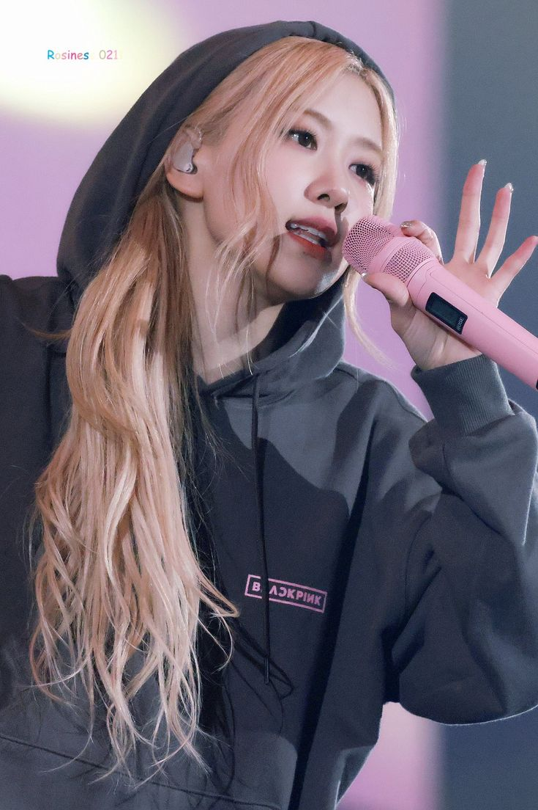
Розанна Пак (более известная как ROSÉ) — южнокорейская певица и модель, участница мировой группы BLACKPINK.
В 2021 году она начала сольную карьеру, выпустив альбом «-R-», а позже поразила мир хитами «On The Ground» и «APT». Её уникальный голос и стиль сделали её иконой современной музыки.
🎸 Интересный факт: Свою любимую гитару Розанна назвала «Mazie». Она не расстается с инструментами даже на отдыхе и считает, что музыка — это лучший способ выразить те чувства, которые нельзя передать словами.
ROSE мой кумир. Мне нравится её музыка и она сама. Хотя я её не знаю лично, мне нравится то, что она позволяет видеть публике.
То, как Рози пела этот припев — в этом было что-то волшебное.
Это песня стало для меня самым любимым. Для меня он очень атмосферный, мне нравится его звучание и текст.
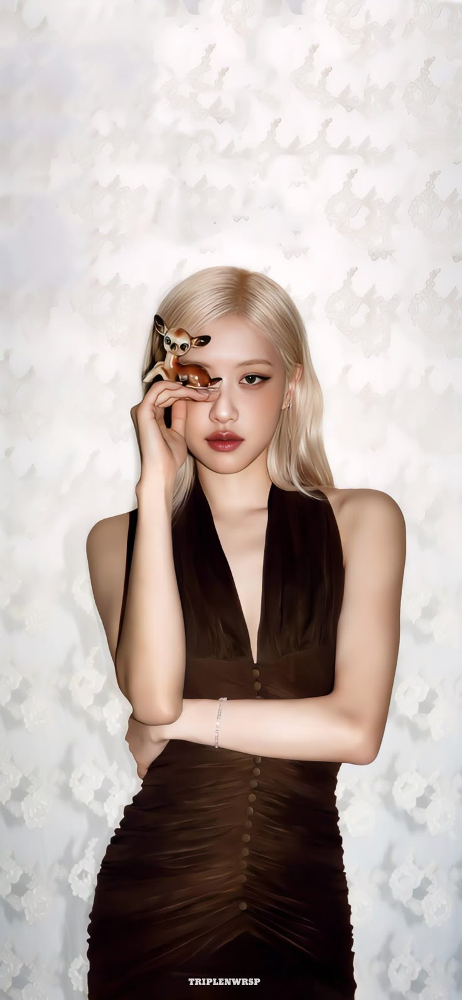

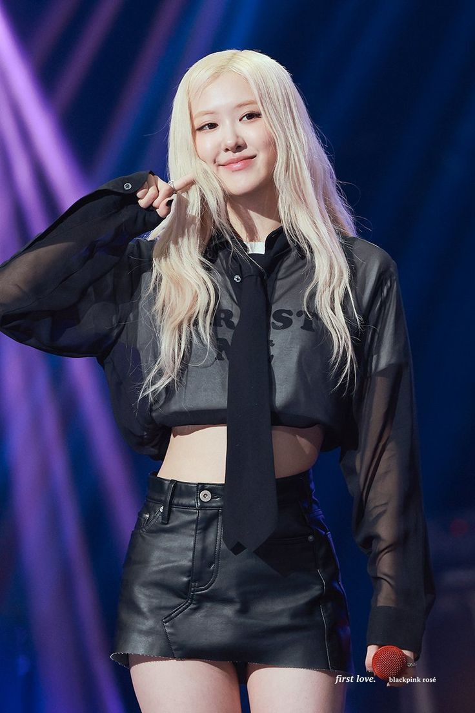
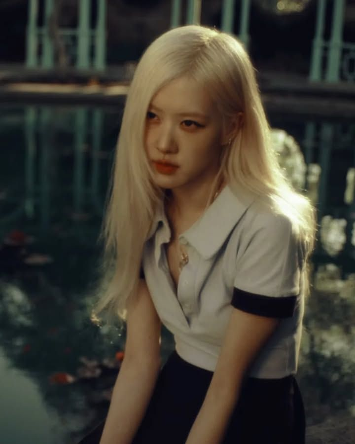
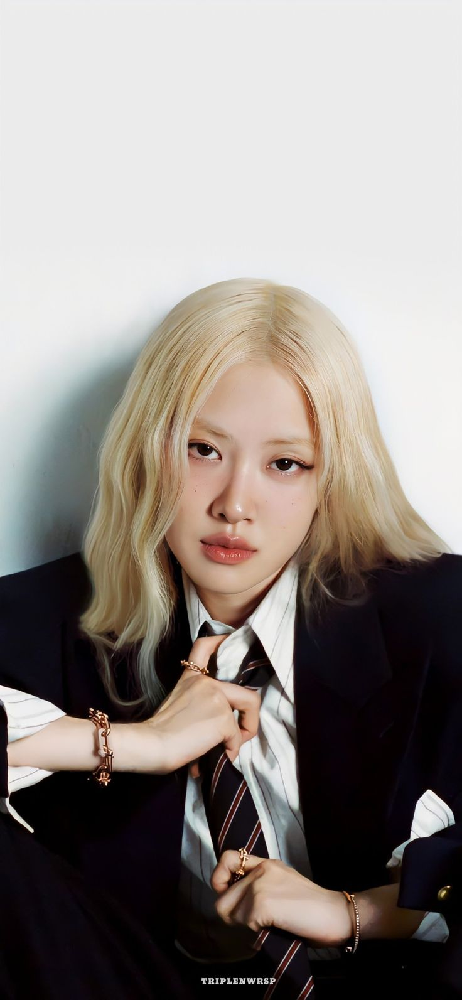
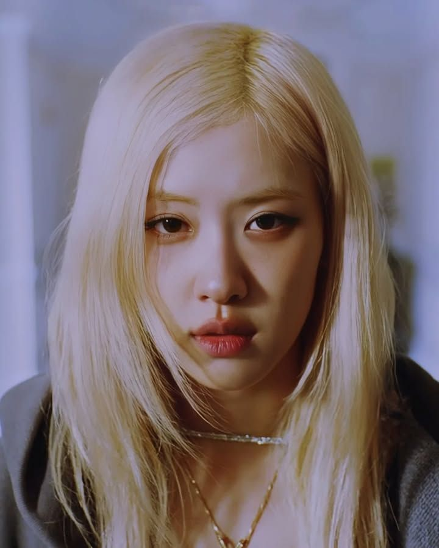
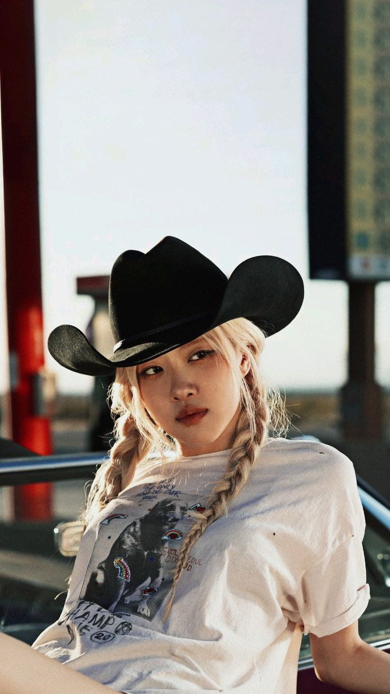
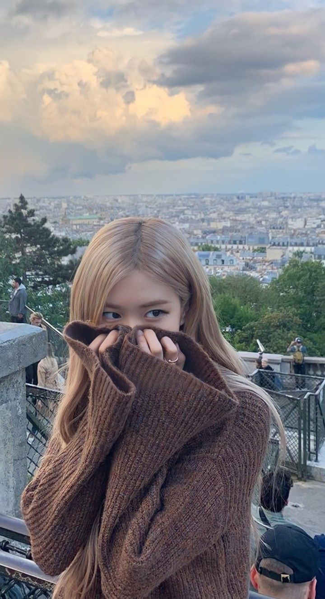
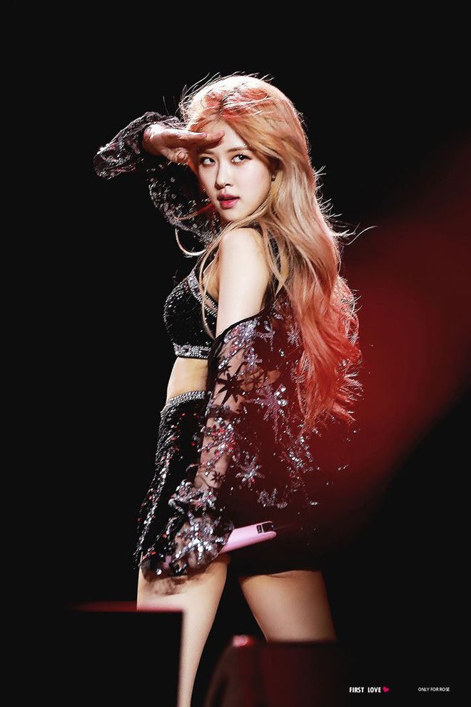
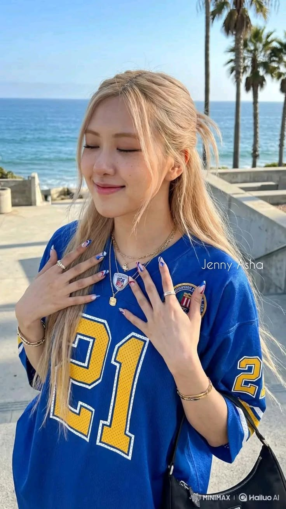
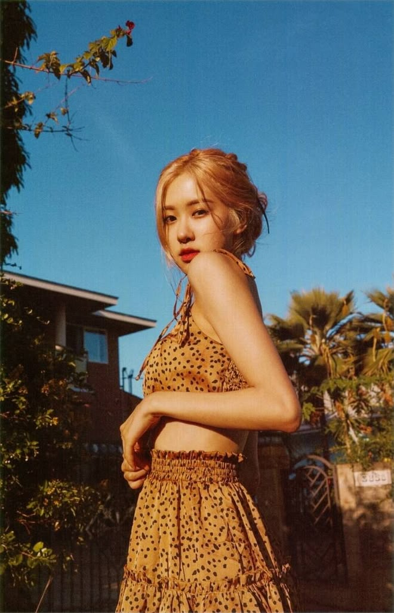
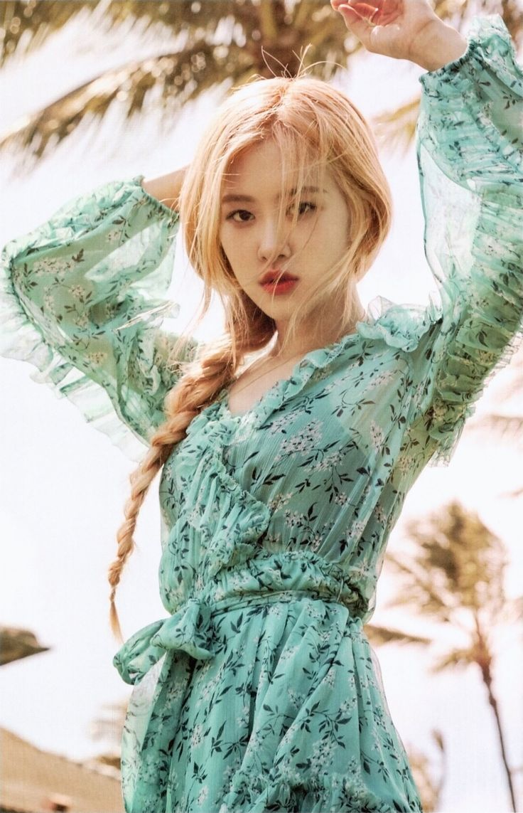
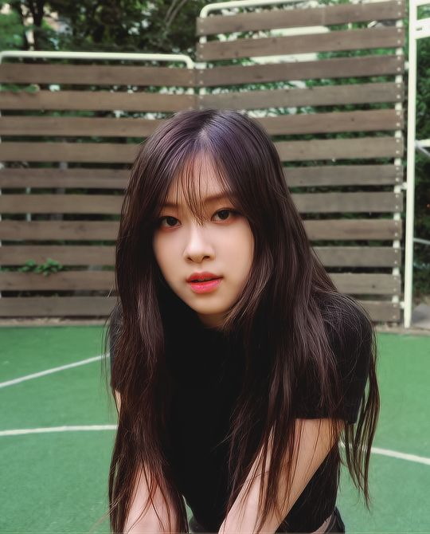